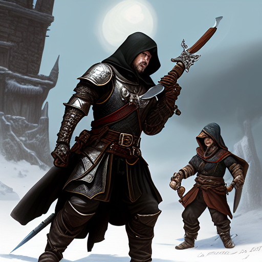
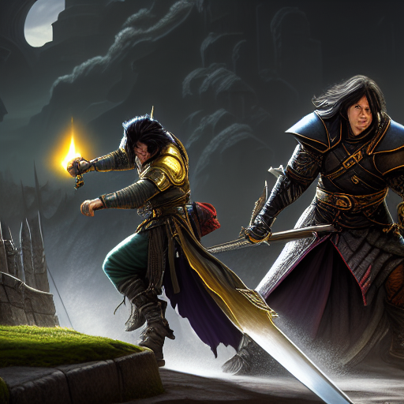

Tura 0 (ważność 5) GM: Las Szeptów, pełen mroku i niebezpieczeństw, otaczał graczy. Wiatr szukał przez gałęzie, tworząc nieprzyjemny szum. Wśród szumu zaczynał się głos, szepcący niezrozumiałe słowa. Gracze widzieli, że wokół nich wyrasta szata z dżungle, pełna trujących roślin i ciernistych gałęzi. Drzewa, które wyra

Tura 1 (ważność 4) Arin: Wiatr wciąż miota, a ja trzymam się ziemi, próbując wstać. To nie jest łatwe, bo ciśnienie jest zbyt duże. Wypuszczam ciężką oddech i próbuję znaleźć siłę, by wstać. Po kilku sekundach próby, wreszcie mogę wstać, ale czuję, że tracę siłę. Moje zdrowie jest na 40 punktach. Teraz muszę podejść s

Tura 2 (ważność 5) Arin: Czas na walkę! Czas na pokazanie, kim ja jestem, Arinem, złodziejem, który nie boi się nikogo. Widząc, jak Garm szturmuje na mnie, postanawiam... Atak! Wybranie tej akcji to naturalne dla mnie rozwiązanie, bo w tej sytuacji nie mogę szukać ucieczki, a obrona nie wyglądałaby zbyt efektownie. Mo